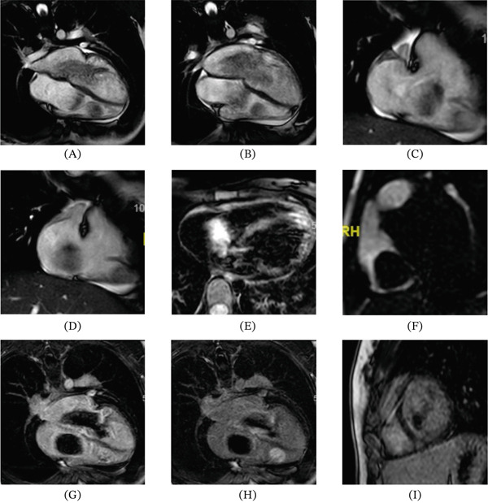
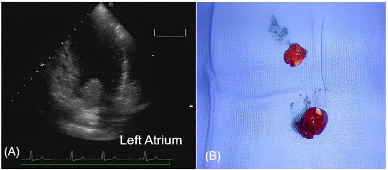
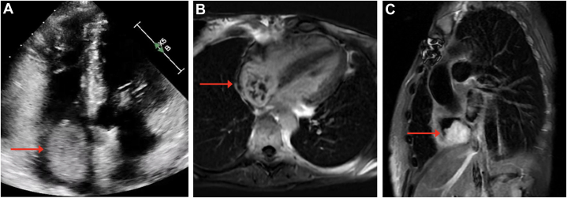

3094 — U nhầy tim thể gia đình & hội chứng Carney: u nhiều buồng, tái phát và tầm soát suốt đời / Familial cardiac myxoma & Carney complex (CNC)
Tags: pattern:khoi-trong-buong-tim pattern:nhieu-o pattern:di-dong vung:tim protocol:TTE protocol:TEE protocol:CMR incidentaloma:khong
Mức chắc chắn (certainty): tổng hợp y văn (literature synthesis) — 1 ca nguyên văn có CMR nhiều buồng (Case Rep Cardiol 2026, PMC13201253, CC BY), 2 ca nguyên văn có ảnh (PMC12240784 CC BY; PMC12441505 CC BY-NC-ND), 1 ca tái phát sớm 4 tháng (PMC13554902, CC BY-NC-ND) và 2 bài tổng quan/tổng hợp ca (PMC13698925 CC BY-NC-ND; PMC12399879 CC BY). Nhóm không có bệnh nhân của mình. Các chỗ nguồn lệch nhau về tỉ lệ u nhầy trong CNC (20–40% so với 42,6–63,1%) và tỉ lệ u nhầy thuộc CNC (7% so với 10%) được ghi rõ là mâu thuẫn nguồn, không chọn bừa.
Câu chốt: u nhầy tim (cardiac myxoma, CM) ở người trẻ, nhiều buồng – nhiều ổ – tái phát phải được coi là bệnh hệ thống do đột biến dòng mầm PRKAR1A (hội chứng Carney, Carney complex – CNC), không phải một khối lành đơn lẻ. Ba số phải thuộc: (1) u nhầy xuất hiện ở 20–40% bệnh nhân CNC, và ~10% tất cả u nhầy tim nằm trong CNC (PMC12441505); (2) tái phát sau mổ tới 22% ở CNC so với < 3% ở u nhầy lẻ tẻ, và u đồng thời nhiều ổ gặp tới 53% bệnh nhân CNC (PMC13698925); (3) 57% ca tử vong trong CNC là do tim (u chèn/thuyên tắc), nên theo dõi phải suốt đời — kể cả sau ghép tim, đã có ca tái phát 26 năm sau ghép (PMC12441505).
1. Tổng quan bệnh học – cơ chế hình ảnh
1.1 Vì sao gọi là bệnh hệ thống: một gen, nhiều u
- CNC (OMIM #160980) là bệnh di truyền trội trên nhiễm sắc thể thường với biểu hiện đa cơ quan: đốm sắc tố da–niêm, u nhầy da/niêm/mắt, u nhầy tim, PPNAD (bệnh tuyến thượng thận nốt sắc tố nguyên phát) gây Cushing, u tuyến yên tiết GH, ung thư giáp, u Sertoli tế bào lớn (LCCST), schwannoma sắc tố dạng psammoma.
- Gen: ~70–80% ca có đột biến bất hoạt PRKAR1A — gen mã hóa tiểu đơn vị điều hòa 1A của protein kinase A (PKA). Mất chức năng PRKAR1A → PKA hoạt động liên tục → tăng sinh tế bào và tạo u. Cơ chế "hai cú đánh": một allen dòng mầm + mất allen lành (LOH 17q24) trong tế bào u.
- Vì sao u "nhiều ổ" và "tái phát" lại là bản chất: khiếm khuyết di truyền có mặt trong mọi tế bào nội mạc/dưới nội mạc của tim, nên u xuất hiện ở nhiều buồng khác nhau, ở vòng van, thành thất, và mọc lại dù đã cắt "sạch" — đó là u mới (de novo) chứ không chỉ là "cắt chưa hết". Ca của Abarca-Rozas: u ở cả hai nhĩ và thất phải ở tuổi 14, cắt rồi mọc lại ở sẹo vách liên nhĩ và 2 ổ mới ở sàn nhĩ trái/thất phải ở tuổi 15 và 18 (PMC13201253).
- Dịch tễ: khoảng 750 ca được xác nhận trên toàn cầu (PMC12399879 — con số dưới thực tế vì bệnh bị bỏ sót); tuổi khởi phát u nhầy 20–40 (PMC13698925), nhưng thể gia đình khởi phát sớm hơn (14 tuổi trong PMC13201253).
1.2 Số liệu cốt lõi (ghi rõ nguồn và chỗ mâu thuẫn)
| Đại lượng | Giá trị | Nguồn |
|---|---|---|
| U nhầy tim trong CNC | 20–40% (một tổng hợp ca ghi 42,6–63,1%) | PMC12441505, PMC12240784; PMC12399879 |
| Tỉ lệ u nhầy tim thuộc CNC | ~10% (bài khác ghi ~7%) | PMC12441505; PMC13698925 |
| Tái phát sau mổ (CNC) | tới 22% (> một nửa bệnh nhân trong một tổng quan) | PMC13698925; PMC12399879 |
| Tái phát sau mổ (u nhầy lẻ tẻ) | < 3% | PMC13698925 |
| U đồng thời nhiều ổ trong CNC | tới 53% | PMC13698925 |
| Tử vong do nguyên nhân tim trong CNC | 57% | PMC13698925 |
| Tổn thương da (dấu sớm nhất) | > 80% bệnh nhân | PMC12399879 |
| PPNAD / Cushing | 26–60% | PMC12399879 |
| Bất thường tuyến yên (tăng GH) | 30–75%; acromegaly 15–18,9% | PMC12399879 |
1.3 TẠI SAO u nhầy sáng trên T2 — và vì sao CMR phân biệt được với huyết khối
- Mô bệnh: u nhầy là chất nền nhầy (myxoid stroma) giàu glycosaminoglycan và nước, tế bào hình sao/thoi rải rác, nhiều mạch nhỏ, có thể xuất huyết, vôi hóa, nang giả. Chính nước liên kết trong chất nền quyết định tín hiệu.
- Vật lý T2: chuỗi xung T2 nhạy với thời gian T2 dài của proton nước tự do/liên kết lỏng lẻo → mô giàu nước sáng trên T2; trên T1, mô u đồng tín hiệu cơ tim vì T1 của mô mềm tương tự. Sau tiêm, u ngấm không đồng nhất (phần mô sống ngấm, phần nhầy/xuất huyết/nang không ngấm).
- Huyết khối thì khác: huyết khối cũ chứa hemosiderin/hemoglobin thoái hóa → T2 tối, T2 tối hơn nữa*, và không ngấm thuốc trên chuỗi LGE. Đây là dấu chốt loại quan trọng nhất khi phân biệt "khối nhĩ trái" với huyết khối ở bệnh nhân rung nhĩ.
- Cine (SSFP): u nhầy di động, sa qua van theo nhịp tim → giải thích triệu chứng tắc nghẽn van (ngất, khó thở tư thế) và nguy cơ thuyên tắc. Cine cũng cho biết cuống/vị trí bám — yếu tố quyết định đường mổ và khả năng bảo tồn van.
- TẠI SAO không dùng 18FDG-PET để loại trừ: u nhầy có chuyển hóa glucose thấp và không ổn định; trong ca PMC12240784, PET âm tính ở bệnh nhân vẫn còn khối — PET âm không loại trừ u nhầy.
2. Mẫu hình + chẩn đoán phân biệt theo vị trí (gamut)
- Mẫu hình "lẻ tẻ" (sporadic): một khối, ~75–90% ở nhĩ trái, bám hố bầu dục (fossa ovalis), cuống rõ, ngấm thuốc không đồng nhất, không tái phát sau mổ đúng.
- Mẫu hình "gia đình/CNC": nhiều ổ, cả hai nhĩ hoặc có ổ ở thất, bám vòng van/vách/thành tự do, tái phát sớm sau mổ, kèm dấu ngoài tim (đốm môi–kết mạc, u nhầy da, Cushing, acromegaly, nốt giáp).
- Theo vị trí:
- Nhĩ trái (phổ biến nhất): hố bầu dục, vách liên nhĩ, thành nhĩ, vòng van hai lá.
- Nhĩ phải: vách liên nhĩ, chỗ nối tĩnh mạch chủ dưới – nhĩ (ca PMC12441505), vòng van ba lá (ca PMC13554902 — u mới 41 × 27 mm sau 4 tháng).
- Thất: thành tự do, vách liên thất, đường ra — hiếm ở người lớn, phải nghĩ CNC hoặc sarcoma.
- Van: vòng van, lá van — dễ nhầm với u nhú sợi đàn hồi (papillary fibroelastoma).
- Gamut khối trong buồng tim: huyết khối (rung nhĩ, bệnh van, suy tim), u nhầy, u nhú sợi đàn hồi, huyết khối nhiễm khuẩn (vegetation), sarcoma (angiosarcoma, myxofibrosarcoma), di căn (melanoma, RCC, HCC qua tĩnh mạch chủ), fibroma, lipoma, mạng Chiari (Chiari network), phình vách liên nhĩ + huyết khối trong, nang ký sinh trùng (echinococcus), khối máu tụ sau chấn thương.
3. Bảng so sánh phân biệt (ma trận đối chiếu)
| Thực thể (entity) | Hình ảnh điển hình (TTE/TEE/CMR) | Chốt vào (rule-in) | Chốt loại (rule-out) | Gợi ý xác nhận |
|---|---|---|---|---|
| U nhầy lẻ tẻ | Một khối nhĩ trái bám hố bầu dục, cuống rõ, di động, T2 sáng, ngấm không đồng nhất | Một ổ + bám hố bầu dục + T2 sáng + ngấm thuốc | Nhiều ổ/có ổ ở thất/van → không phải thể lẻ tẻ | TEE + CMR; mô bệnh sau mổ |
| U nhầy trong CNC | Nhiều ổ nhiều buồng, tái phát ở sẹo/vòng van, có dấu ngoài tim | ≥ 2 ổ, hoặc tái phát, hoặc tuổi trẻ + dấu da/nội tiết | Khối đơn độc ở người > 40 tuổi không dấu ngoài tim → ít nghĩ CNC | Tiêu chuẩn CNC + giải trình tự PRKAR1A; tầm soát gia đình |
| Huyết khối trong nhĩ | Bám thành sau nhĩ trái/rung nhĩ, T2 tối, không ngấm, có thể lớp | T2 tối + không ngấm + bối cảnh rung nhĩ/giảm EF | T2 sáng + ngấm thuốc + cuống → không phải huyết khối | CMR (T2/T2*/LGE); TEE; điều trị kháng đông thử |
| U nhú sợi đàn hồi | Khối nhỏ < 1–2 cm, bám mặt van, dạng "san hô", di động | Kích thước nhỏ + bám van + T2 trung tính | Khối lớn, xâm lấn, nhiều ổ → không phải | TEE; CMR nếu cần; mổ khi có triệu chứng/thuyên tắc |
| Sarcoma tim | Khối xâm lấn, bờ không đều, T2 trung–cao không đồng nhất, ngấm mạnh, tràn dịch màng tim, di căn | Xâm lấn + phát triển nhanh + tràn dịch | Bờ nhẵn, cuống rõ, không xâm lấn → ít nghĩ sarcoma | CMR + PET/CT + sinh thiết; cảnh giác "tái phát u nhầy" thực ra là sarcoma |
| Di căn tim | Nhiều ổ, thường màng tim/cơ tim phải, có u nguyên phát | Nhiều ổ ngoài buồng + u nguyên phát đã biết | Khối đơn độc trong buồng có cuống → không phải | CT ngực–bụng–chậu, PET/CT |
| Mạng Chiari / van Eustachian | Dải mảnh di động ở nhĩ phải, không có thân khối | Cấu trúc dải mảnh, không ngấm, không chèn van | Có thân khối > 1 cm, ngấm thuốc → không phải biến thể | TEE/CMR; không can thiệp |
4. Protocol chụp + hệ phân độ/điểm chuẩn hóa
4.1 Chẩn đoán hình ảnh theo bước
- Siêu âm tim qua thành ngực (TTE) — đầu tay: đo kích thước 3 chiều, vị trí bám, độ di động/sa van, chênh áp qua van, chức năng thất. Hạn chế: bỏ sót u nhĩ phải/thất và u < 1 cm.
- Siêu âm tim qua thực quản (TEE) — khi nghi u nhầy, khi cần đo cuống/chân bám để lập kế hoạch mổ, hoặc khi TTE không thấy rõ. Với CNC, phải khảo sát cả 4 buồng, không dừng ở nhĩ trái.
- CMR tim — chuẩn mô học không xâm lấn: cine (di động, bám), T1/T2 + T2* (phân biệt huyết khối), tưới máu + LGE (ngấm không đồng nhất), đánh giá xâm lấn cơ/túi phình. Đây là chuỗi quyết định khi TTE mơ hồ và khi cần theo dõi tái phát.
- CT tim đồng bộ điện tâm đồ — khi CMR chống chỉ định/không sẵn; đánh giá vôi hóa, tương quan mạch vành trước mổ.
- Xét nghiệm di truyền: giải trình tự PRKAR1A (và MLPA nếu âm) khi: u nhầy < 40 tuổi, nhiều ổ, tái phát, có dấu ngoài tim, hoặc tiền sử gia đình. Sau đó tầm soát dạng thác (cascade) cho người thân bậc 1.
4.2 Tiêu chuẩn chẩn đoán CNC (bảng gốc, PMC12240784)
| Nhóm | Tiêu chí |
|---|---|
| Tiêu chí chính (major) | (1) Đốm sắc tố điển hình (môi, kết mạc, góc mắt, niêm mạc sinh dục); (2) u nhầy da/niêm; (3) u nhầy tim; (4) myxomatosis vú hoặc MRI ức chế mỡ gợi ý; (5) PPNAD hoặc cortisol niệu tăng sau dexamethasone liều cao; (6) acromegaly do u tuyến yên tiết GH; (7) ung thư giáp hoặc nhiều nốt giảm âm tuyến giáp ở người trẻ; (8) schwannoma sắc tố dạng psammoma; (9) blue nevus (nhiều); (10) adenoma ống tuyến vú (nhiều); (11) osteochondromyxoma; (12) LCCST hoặc vôi hóa đặc trưng trên siêu âm tinh hoàn ở người trẻ |
| Tiêu chí bổ sung (supplemental) | (1) Người thân bậc 1 mắc bệnh; (2) đột biến bất hoạt PRKAR1A |
| Chẩn đoán xác định | ≥ 2 tiêu chí chính, hoặc 1 tiêu chí chính + 1 tiêu chí bổ sung |
4.3 Lịch theo dõi (flowchart)
flowchart TD
A["U nhầy tim: trẻ < 40 tuổi, nhiều ổ, tái phát hoặc có dấu ngoài tim"] --> B["Khám da – niêm, nội tiết, siêu âm giáp/tinh hoàn"]
B --> C{"Đủ tiêu chuẩn CNC?"}
C -->|"Có"| D["Giải trình tự PRKAR1A + tư vấn di truyền"]
C -->|"Chưa rõ"| E["CMR + theo dõi 6–12 tháng, làm lại tiêu chuẩn"]
D --> F["Mổ lấy u: cắt rộng chân bám, kiểm tra cả 4 buồng"]
F --> G["TTE hằng năm SUỐT ĐỜI (không dừng sau 10 năm)"]
E --> G
G --> H{"Khối mới / tái phát?"}
H -->|"Có"| I["TEE + CMR; hội chẩn tim – ung thư; cân nhắc mổ lại hoặc ghép tim"]
H -->|"Không"| G
I --> J["Tầm soát nội tiết định kỳ: cortisol niệu/ACTH, IGF-1, siêu âm giáp, MRI não khi có chỉ định"]
- Vì sao "suốt đời": tái phát hay gặp trong 10 năm đầu nhưng không dừng ở 10 năm — đã có ca tái phát 26 năm sau ghép tim ở bệnh nhân CNC (PMC12441505); khuyến cáo chuyên gia cho u nhầy lẻ tẻ là TTE hằng năm trong 10 năm, còn thể gia đình cần theo dõi trọn đời (PMC12441505).
- Không có guideline chính thức về lịch theo dõi sau mổ u nhầy (nguồn gốc ghi rõ "no guidelines"); mọi con số ở trên là khuyến cáo chuyên gia/ca lâm sàng, không phải mức chứng cứ cao.
5. Biến thể bình thường và cạm bẫy
- Biến thể bình thường dễ nhầm: mạng Chiari và van Eustachian (dải mảnh nhĩ phải, không ngấm, không chèn van); phình vách liên nhĩ (vách mỏng lồi, không có thân khối); mỏm cơ nhú lớn; vôi hóa vòng van; dây xơ sau mổ (sẹo ngấm thuốc tại chỗ nối).
- Cạm bẫy 1 — "u nhầy lành, mổ xong là khỏi": bỏ qua tầm soát CNC ở người trẻ/nhiều ổ → bỏ sót u thứ hai, Cushing, acromegaly và ung thư giáp; 57% tử vong trong CNC là do tim (PMC13698925).
- Cạm bẫy 2 — chỉ khảo sát nhĩ trái: u ở nhĩ phải/thất/vòng van dễ bị bỏ trên TTE; ca CNC có u 3 buồng (PMC13554902) và u thất phải (PMC13201253). Phải khảo sát cả 4 buồng và đo lại sau mổ.
- Cạm bẫy 3 — nhầm huyết khối với u: huyết khối T2 tối, không ngấm; nếu chỉ dùng TTE sẽ gọi "khối nhĩ trái" và cho kháng đông kéo dài trong khi u vẫn tiếp tục gây tắc van/thuyên tắc.
- Cạm bẫy 4 — "tái phát u nhầy" thực ra là sarcoma: u myxofibrosarcoma/sarcoma có thể giống hệt trên hình thái và chỉ lộ ra ở mô bệnh; bờ xâm lấn, phát triển nhanh, tràn dịch màng tim là dấu cảnh báo (đã có ca "tái phát" được phân loại lại thành myxofibrosarcoma — PMC13464279, chỉ dùng số liệu/nhận định).
- Cạm bẫy 5 — bỏ sót nhiễm khuẩn u: u nhầy có thể nhiễm khuẩn (sốt, cấy dương) và gây tắc van ba lá; ca PMC13554902 có u nhĩ phải nhiễm khuẩn, sau mổ tái phát 4 tháng ở vòng van ba lá.
- Cạm bẫy 6 — PET âm: 18FDG-PET âm không loại trừ u nhầy (PMC12240784); không dùng PET để "yên tâm" rồi bỏ TEE/CMR.
- Cạm bẫy 7 — bỏ theo dõi sau ghép tim: ghép tim không chữa khỏi CNC; mô nhĩ nhận còn sót có thể sinh u mới hàng chục năm sau (PMC12441505).
6. Tự lượng giá — Blind Quiz ngay trên trang tĩnh
Ca 1 — thiếu niên, nhiều khối trong tim

- Gợi ý lâm sàng: nữ 14 tuổi, tình cờ phát hiện nhiều khối trong tim; 3 năm sau mổ lại vì khối mới.
- Câu hỏi: Khối nằm ở buồng nào (A–D)? Dấu hiệu nào trên (E–I) giúp phân biệt u nhầy với huyết khối? Chẩn đoán hệ thống nào phải nghĩ tới?
Bấm để hiện đáp án (findings + chẩn đoán)
- Dấu hiệu: (A, B) cine 4 buồng — khối di động ở cả nhĩ phải và nhĩ trái, sa qua van nhĩ–thất; (C, D) trục dài thất phải — khối thứ ba bám thành tự do thất phải giữa–mỏm; (E) T2 ức chế mỡ — khối tăng tín hiệu (giàu nước/nhầy); (F–I) các lát cắt theo trục và LGE cho thấy khối ngấm thuốc không đồng nhất, không xâm lấn cơ tim.
- Chẩn đoán: u nhầy tim nhiều ổ trong hội chứng Carney (CNC) — nhiều buồng + tuổi trẻ + tái phát là bộ ba gợi ý; xác nhận bằng tiêu chuẩn CNC và PRKAR1A.
- Vì sao: u nhầy giàu chất nền nhầy chứa nước → T2 sáng; huyết khối cũ có hemosiderin → T2 tối, không ngấm.
- Nguồn ảnh: Abarca-Rozas B, Saavedra F, Retamal JP, Vergara F, Revello J, Zelada P, Fullerton DA. Case Rep Cardiol 2026;2026:7261880. Fig. 1 — PMC13201253 · CC BY 4.0.
Ca 2 — khối nhĩ trái tái phát, kèm triệu chứng thần kinh

- Gợi ý lâm sàng: nữ 46 tuổi đã mổ u nhầy nhĩ trái, nay đột quỵ tái diễn; siêu âm thấy khối bám vách liên nhĩ.
- Câu hỏi: Khối bám ở đâu (A)? Vì sao bệnh nhân vẫn đột quỵ dù đã mổ? Kích thước khối trong bài là bao nhiêu?
Bấm để hiện đáp án (findings + chẩn đoán)
- Dấu hiệu: (A) TTE 4 buồng — khối di động trong nhĩ trái, bám vách liên nhĩ, đo được khoảng 3,3 × 2,5 × 1,5 cm; (B) bệnh phẩm nhầy, trong, màu vàng–hồng đặc trưng.
- Chẩn đoán: u nhầy nhĩ trái tái phát trong CNC (bệnh nhân đã có Cushing do PPNAD, đốm môi, u nhầy da); 7 năm sau, khối mới ở hố bầu dục 3,5 × 2,9 × 1,3 cm kèm u cũ còn 1,7 × 1,1 × 1,1 cm.
- Vì sao: tái phát + nhiều ổ + dấu nội tiết/da = CNC; mảnh u hoặc huyết khối trên bề mặt u gây thuyên tắc não tái diễn — kháng đông không thay được mổ.
- Nguồn ảnh: Kuhn AW, Lerario AM, Morais ANR, Iglesio RF, Ramires FJA, Maluf LCA, Hoff AO, Latronico AC, Mendonça BB, Almeida MQ, Fragoso MCBV. Front Oncol 2025;15:1605692. Fig. 1 — PMC12240784 · CC BY 4.0.
Ca 3 — khối nhĩ phải rất muộn sau ghép tim

- Gợi ý lâm sàng: nữ có CNC, đã ghép tim 26 năm vì u nhầy tái phát, nay khó thở và phù.
- Câu hỏi: Khối nằm ở đâu (mũi tên)? Vì sao ghép tim không chữa khỏi bệnh? Theo dõi sau ghép nên làm gì?
Bấm để hiện đáp án (findings + chẩn đoán)
- Dấu hiệu: (A) TTE — khối lớn ở nhĩ phải, gần chỗ nối tĩnh mạch chủ dưới – nhĩ; (B) CMR mặt phẳng trục (PSIR/LGE) — khối ngấm thuốc không đồng nhất; (C) mặt phẳng dọc — khối lấp một phần nhĩ phải, không xâm lấn thành.
- Chẩn đoán: u nhầy tái phát muộn từ mô nhĩ gốc còn sót sau ghép tim — khoảng 26 năm sau ghép, dài nhất trong y văn (trước đó 20 năm ở một bệnh nhân có hội chứng u nhầy gia đình).
- Vì sao: đột biến PRKAR1A dòng mầm vẫn còn trong mô nhĩ nhận → u mới; ghép tim không phải chữa khỏi, cần TTE hằng năm suốt đời.
- Nguồn ảnh: Ayer A, Silver E, Birs A, Martillo Correa M, Hajduczok A, Pretorius V, Adler E. JACC Case Rep 2025;30(21):104333. Fig. 1 — PMC12441505 · CC BY-NC-ND 4.0 (nguyên bản, không chỉnh sửa).
Bài liên quan chéo
- 3093 – Nhồi máu não do u nhầy tim: nhiều ổ, túi phình myxoma & khi nào mổ tim
- 810 – CTA động mạch vành & CAD-RADS
- 820 – MRI tim: LGE & mapping
Ảnh
- Tên file:
NNN_slug_Modality_SourceID.jpg. Nguồn + giấy phép từng ảnh trongimages/CREDITS.md. - Bài này không có composite vì một ảnh là CC BY-NC-ND (không được tạo tác phẩm phái sinh) — theo quy tắc ảnh của
AGENTS.md.
Không dùng để chẩn đoán độc lập khi chưa có người hướng dẫn.